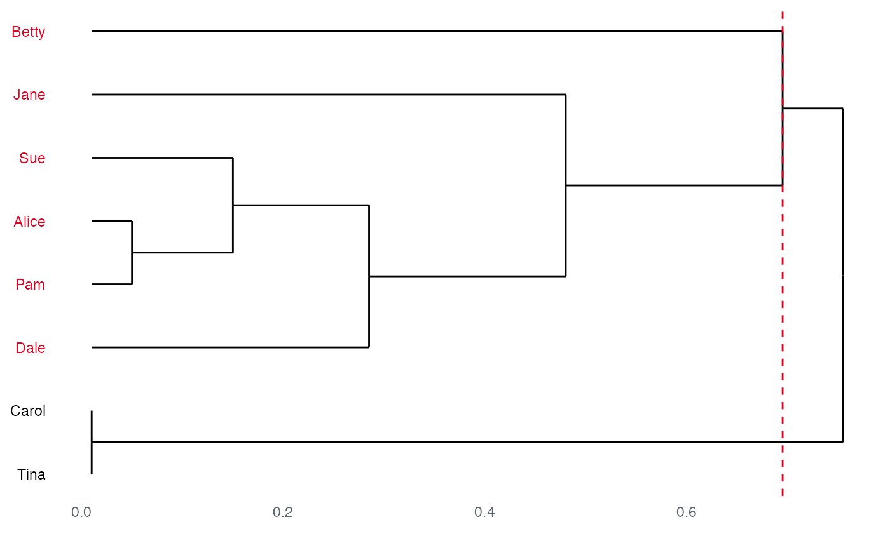

R/member_community.R
member_community_hier.RdThese functions offer algorithms for hierarchically clustering networks into communities. Since all of the following are hierarchical, their dendrograms can be plotted:
node_in_betweenness() is a hierarchical, decomposition algorithm
where edges are removed in decreasing order of the number of
shortest paths passing through the edge.
node_in_greedy() is a hierarchical, agglomerative algorithm,
that tries to optimize modularity in a greedy manner.
node_in_eigen() is a top-down, hierarchical algorithm.
node_in_walktrap() is a hierarchical, agglomerative algorithm based on random walks.
The different algorithms offer various advantages in terms of computation time, availability on different types of networks, ability to maximise modularity, and their logic or domain of inspiration.
node_in_betweenness(.data)
node_in_greedy(.data)
node_in_eigen(.data)
node_in_walktrap(.data, times = 50)An object of a manynet-consistent class:
matrix (adjacency or incidence) from {base} R
edgelist, a data frame from {base} R or tibble from {tibble}
igraph, from the {igraph} package
network, from the {network} package
tbl_graph, from the {tidygraph} package
Integer indicating number of simulations/walks used.
By default, times=50.
This is motivated by the idea that edges connecting different groups are more likely to lie on multiple shortest paths when they are the only option to go from one group to another. This method yields good results but is very slow because of the computational complexity of edge-betweenness calculations and the betweenness scores have to be re-calculated after every edge removal. Networks of ~700 nodes and ~3500 ties are around the upper size limit that are feasible with this approach.
Initially, each node is assigned a separate community. Communities are then merged iteratively such that each merge yields the largest increase in the current value of modularity, until no further increases to the modularity are possible. The method is fast and recommended as a first approximation because it has no parameters to tune. However, it is known to suffer from a resolution limit.
In each step, the network is bifurcated such that modularity increases most. The splits are determined according to the leading eigenvector of the modularity matrix. A stopping condition prevents tightly connected groups from being split further. Note that due to the eigenvector calculations involved, this algorithm will perform poorly on degenerate networks, but will likely obtain a higher modularity than fast-greedy (at some cost of speed).
The general idea is that random walks on a network are more likely to stay within the same community because few edges lead outside a community. By repeating random walks of 4 steps many times, information about the hierarchical merging of communities is collected.
Newman, Mark, and Michelle Girvan. 2004. "Finding and evaluating community structure in networks." Physical Review E 69: 026113. doi:10.1103/PhysRevE.69.026113
Clauset, Aaron, Mark E.J. Newman, and Cristopher Moore. 2004. "Finding community structure in very large networks." Physical Review E, 70: 066111. doi:10.1103/PhysRevE.70.066111
Newman, Mark E.J. 2006. "Finding community structure using the eigenvectors of matrices" Physical Review E 74:036104. doi:10.1103/PhysRevE.74.036104
Pons, Pascal, and Matthieu Latapy. 2005. "Computing communities in large networks using random walks". 1-20. doi:10.48550/arXiv.physics/0512106
Other memberships:
mark_core,
member_brokerage,
member_cliques,
member_community_non,
member_components,
member_equivalence
node_in_betweenness(ison_adolescents)
#> 2 groups
#> Betty Sue Alice Jane Dale Pam Carol Tina
#> 1 A A A A A A B B
if(require("ggdendro", quietly = TRUE)){
plot(node_in_betweenness(ison_adolescents))
}

node_in_greedy(ison_adolescents)
#> 3 groups
#> Betty Sue Alice Jane Dale Pam Carol Tina
#> 1 C C B B B A A A
node_in_eigen(ison_adolescents)
#> 3 groups
#> Betty Sue Alice Jane Dale Pam Carol Tina
#> 1 A A C C C B B B
node_in_walktrap(ison_adolescents)
#> 3 groups
#> Betty Sue Alice Jane Dale Pam Carol Tina
#> 1 A A C C C A B B